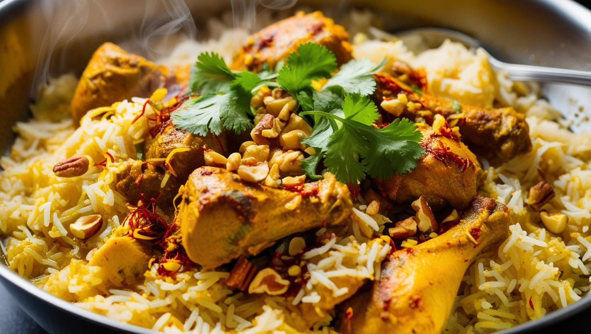
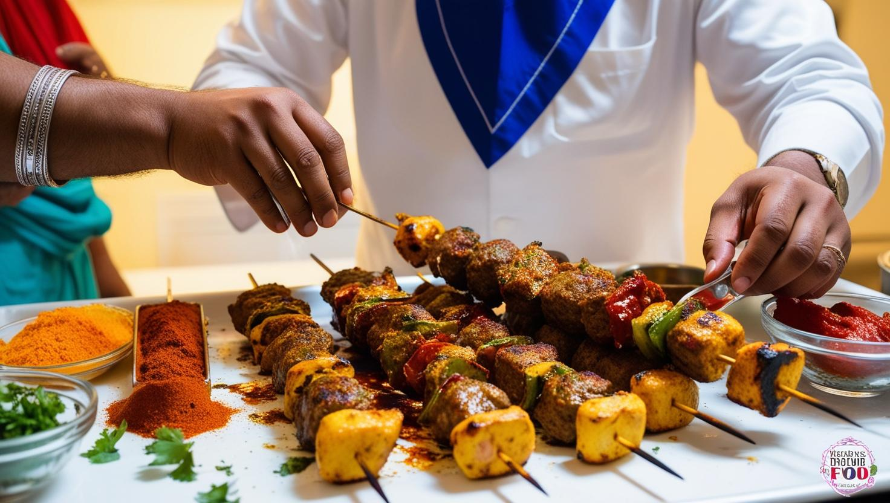
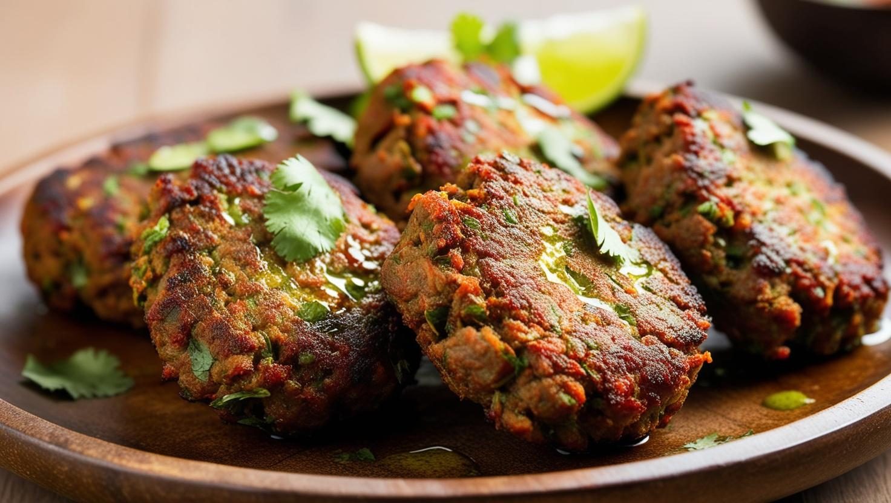

Delicious Food & Cuisine in Rawalpindi
Rawalpindi is home to a vibrant food scene, where rich flavors and diverse dishes await every food lover. Explore some of the top foods you must try when in Rawalpindi.

Biryani
Biryani is a fragrant rice dish made with flavorful spices and either chicken, mutton, or beef. It's a must-try for those who love a good spicy meal.

Seekh Kebabs
Seekh kebabs are minced meat (usually beef or chicken) mixed with spices and grilled to perfection. Served with naan or rice, they make for a great street food option.

Chapli Kebab
A specialty from the Khyber Pakhtunkhwa region, Chapli kebabs are made from minced beef or chicken and flavored with aromatic spices, perfect for a quick snack.